Juan Pablo Ybarra
Lic. en Economía · Mgs. en Finanzas
FCA · UNNE · Departamento de Economía
Clase inicial orientada a presentar el equipo docente, las reglas de cursado, el cronograma de trabajo y los primeros problemas conceptuales de la asignatura.
Presentación de la materia
La materia combina teoría, práctica, actualidad económica y lectura crítica de información pública.
Lic. en Economía · Mgs. en Finanzas
Lic. en Economía · Mgs. en Economía y Desarrollo
Lic. en Administración · Mgs. en Empresas de Fliar.
Ing. Agr. · Mgs. en Agronegocios y Alimentos · Mgs. of Science
Ayudante alumno
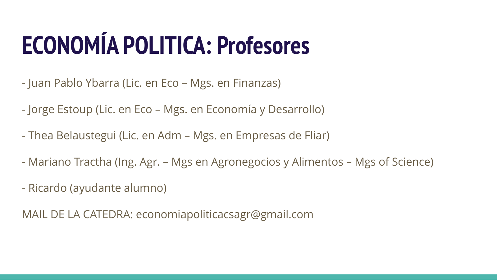
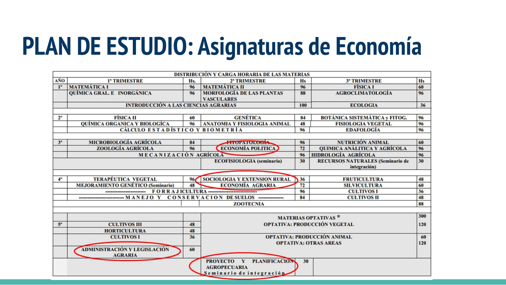
Disparadores de clase
La clase parte de situaciones simples para separar percepciones, precios, costos y valor. El objetivo es entrenar una mirada económica aplicada a problemas concretos.
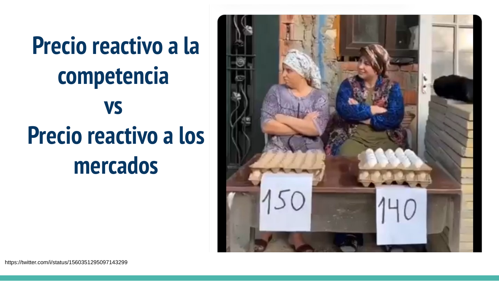
Primer concepto operativo
Es la cantidad de dinero que una persona está dispuesta a pagar según los beneficios que percibe.
Es la cantidad de dinero necesaria para producir y comercializar un bien o servicio.
Es la cantidad de dinero que debe pagarse para comprar el bien.
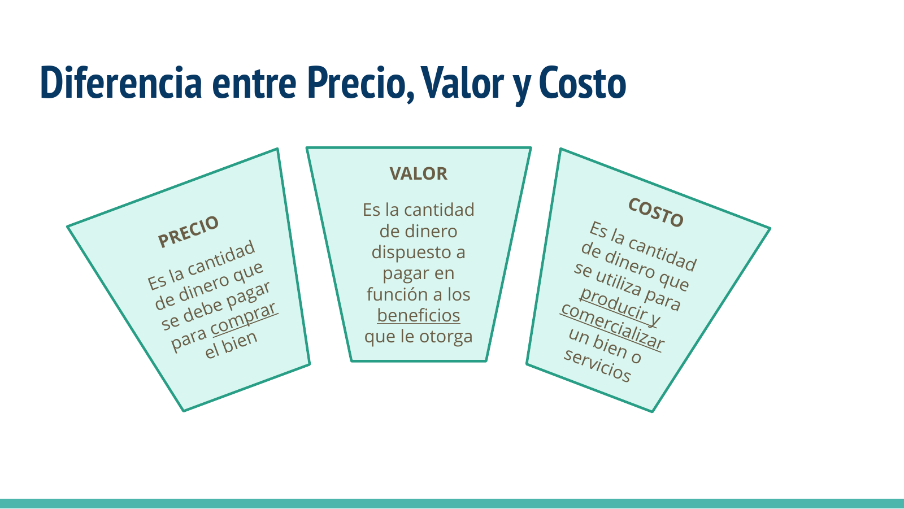
Objetivo ideal de la cátedra
Pasar de la opinión intuitiva a la lectura fundada de problemas económicos, noticias, datos y reglas de funcionamiento de los mercados.
Organización del cursado
Martes 16:30 a 17:45
Primera parte · Teoría
Martes 18:00 a 19:30
Segunda parte · Práctico · Traer calculadora
Viernes 18:00 a 19:30
Teoría · Mecanización / campito
Aula virtual con automatriculación.
Materiales: PPT de clases, guías de trabajos prácticos y resoluciones.
Feriado previsto: viernes 10 de julio.
Receso de invierno: 13 al 24 de julio.
Parciales: 3/7 y 1/9. Recuperatorio: 4/9.
Unidades 1 a 5 · Principios y microeconomía · teoría, prácticos, 2 charlas y 1 parcial.
Unidades 6 a 10 · Macroeconomía · teoría, prácticos, 1 charla, 1 parcial, recuperatorio y viaje de mecanización.
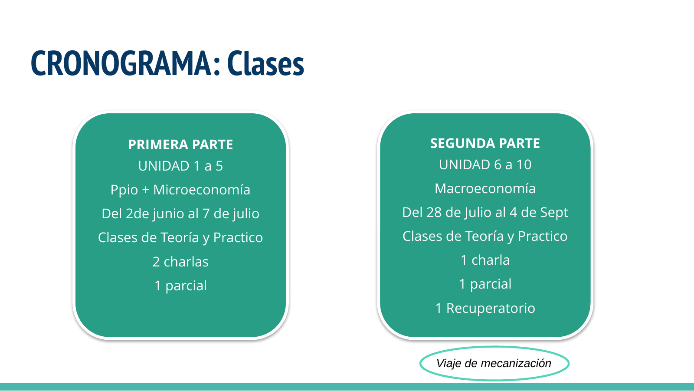
Reglas de juego
Aprobar los dos parciales con mínimo de 7.
Asistencia mínima: 75%.
Aprobar los dos parciales con mínimo de 6.
Incluye opción de un recuperatorio. Asistencia mínima: 75%.
Condición para quienes no cumplan los requisitos anteriores.
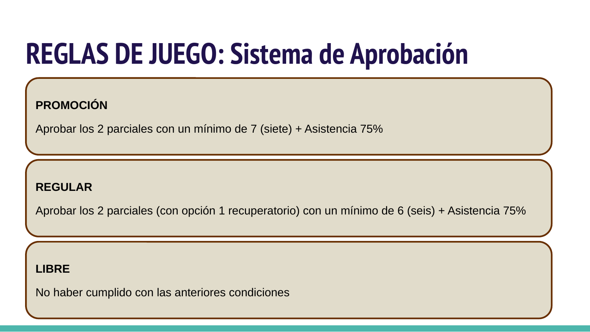
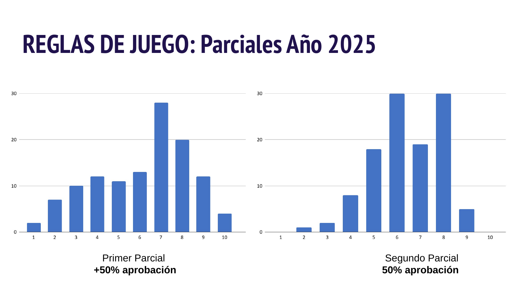
Materiales de estudio
Las presentaciones funcionan como guía de lectura y organización conceptual.
El aprendizaje se completa con lectura, práctica y resolución de ejercicios.
La lectura de noticias permite aplicar conceptos económicos a hechos concretos.
La economía se aborda como ciencia social con impacto en personas, producción y territorio.
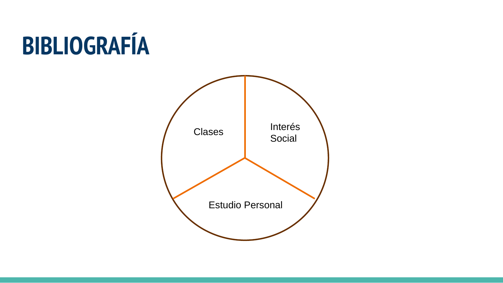
Qué vamos a ver
La agronomía trabaja sobre la generación sustentable de alimentos. La economía modeliza fenómenos con impactos sociales.
Estudia saberes, teorías, pensamientos, modelizaciones y relaciones entre producción e intercambio.
Aplica conceptos teóricos para modificar comportamientos mediante instrumentos fiscales, monetarios, cambiarios y regulatorios.
La economía estudia extracción, producción, intercambio, distribución y consumo de bienes y servicios frente a necesidades múltiples y recursos escasos.
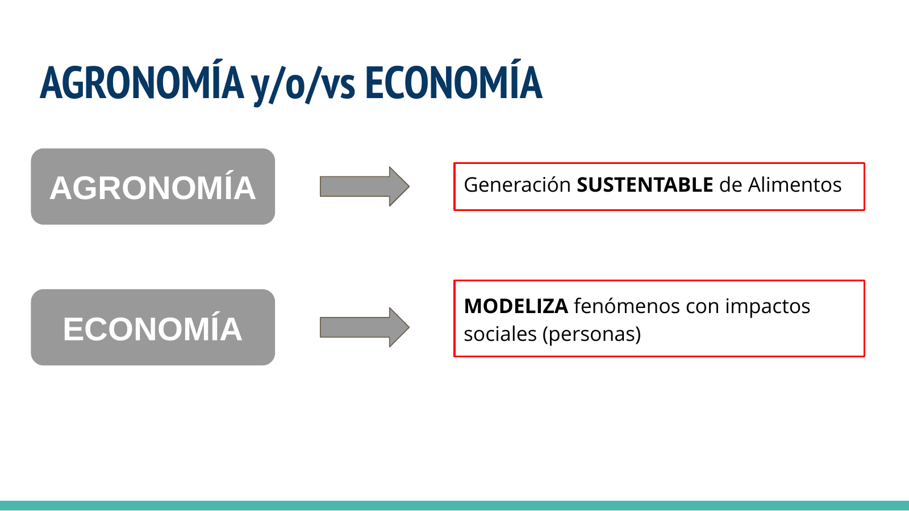
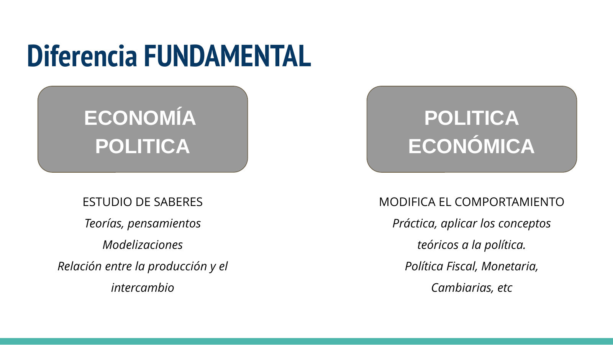
Población, recursos y tecnología
El problema de la escasez no desaparece, se transforma con la tecnología, la productividad y la organización social.
El crecimiento poblacional presionaría sobre recursos fijos como tierra y minerales, generando rendimientos decrecientes.
La innovación permite alimentar a una población creciente y elevar la productividad por hectárea.
En 50 años, la producción de granos por hectárea se duplicó o incluso se triplicó en algunos cultivos.
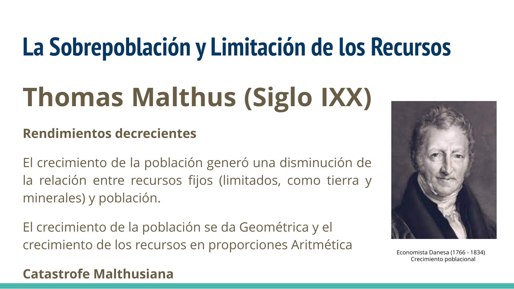
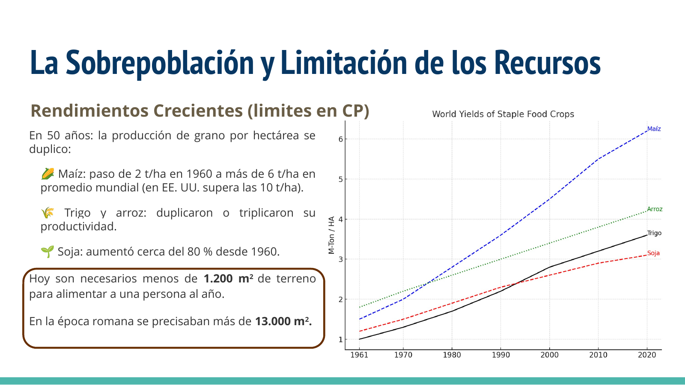
La definición clásica se tensiona cuando se incorporan bienes y servicios renovables y agotables, necesidades presentes y futuras, y recursos escasos frente a demandas crecientes.
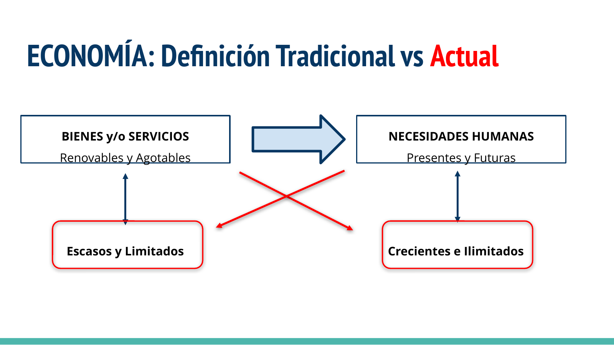
La economía positiva describe lo que es y se apoya en datos. La economía normativa expresa lo que se considera deseable según valores y creencias.
Material original preservado
Se incorpora la presentación original como respaldo visual para conservar gráficos, noticias, capturas y composición de cada diapositiva.